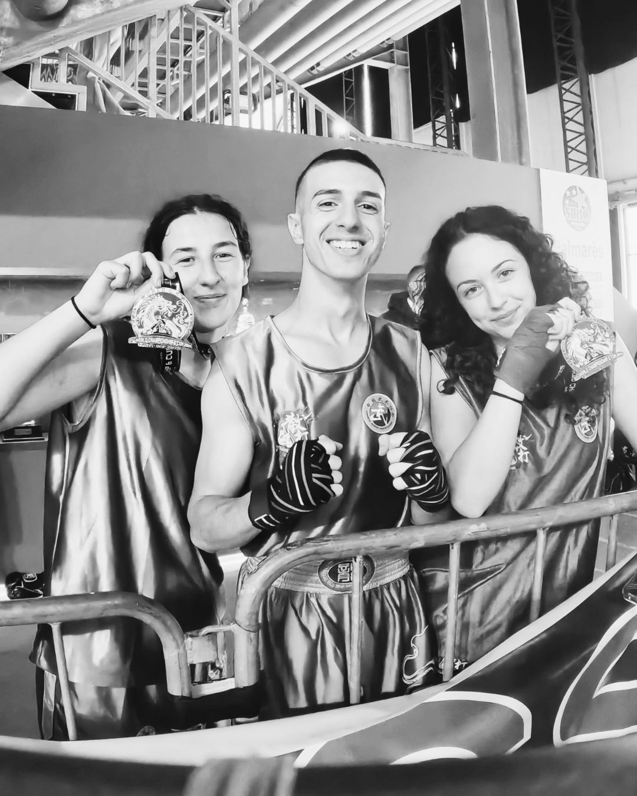
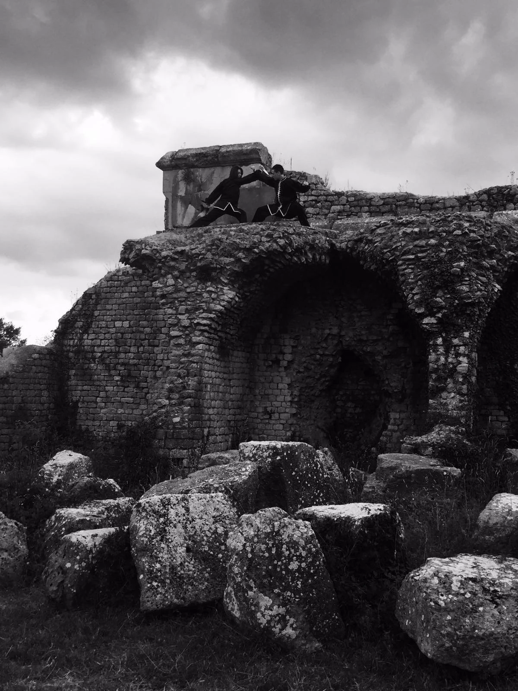
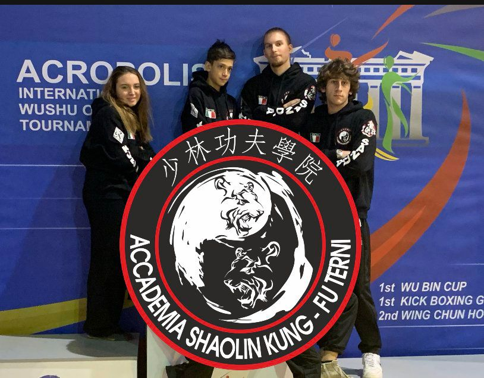

Caratteristiche e principi teorici
Difficile poter stabilire una data certa in cui l'arte del KUNG FU ebbe inizio, certo è che essa ha origini antichissime avvolte nella leggenda. Tutte le informazioni giunte fino a noi oggi, ci sono state tramandate verbalmente e tenendo sempre presente le fonti storiche, possiamo attribuire ai tempi del mitico Imperatore Giallo HUANGDI', vissuto all'incirca nel 2700 a.C., una forma di combattimento, peraltro violenta, in cui i contendenti cercavano di trafiggersi. Dobbiamo attendere il periodo compreso tra il 1100 ed il 300 a.C. prima di poter avere le prime vere testimonianze storiche sulle ARTI MARZIALI, precisamente quando la Cina subiva il dominio positivo della DINASTIA CHOU, popolata da grandi saggi che diedero un notevole contributo al fiorire di tutte le arti, comprese quelle marziali.
Attribuiamo all'epoca del Periodo dei tre regni (220-280 a.C.) le prime notizie circa l'evoluzione zoomorfica dell'ARTE MARZIALE, divenuta caratteristica costante nei diversi stili di combattimento. Risale a questo periodo l'invenzione del “GIOCO DEI 5 ANIMALI”, serie di esercizi fisici che si rifacevano ai movimenti di TIGRE, ORSO, CERVO, SCIMMIA e GRU. La diffusione in veste moderna del KUNG FU è recente. Infatti, durante e dopo la rivoluzione culturale e comunista, numerosi MAESTRI fuggirono sia in paesi vicini che lontani, come America ed Europa, aprendo delle scuole e riportando gradualmente questa ARTE MARZIALE a diffondersi tra popolazioni di diverse culture. Il nome KUNG FU è la traslitterazione degli ideogrammi KUNG e FU che, sinteticamente, significano DURO LAVORO.
Tre sono le correnti filosofiche che hanno influenzato nel tempo il KUNG FU:
- il BUDDISMO, atto a curare l'aspetto meditativo;
- il TAOISMO, che sostiene i principi di polarità YIN e YANG, i rapporti con la natura e la ginnastica terapeutica;
- il CONFUCIANESIMO, dal suo fondatore CONFUCIO, si prende cura dell'aspetto formale, della disciplina, delle regole e delle gerarchie.
Sostanzialmente il Kung-Fu si divide in stili ESTERNI, che si basano sulla forza muscolare e prestanza fisica, o stili INTERNI, che prediligono lo studio della coordinazione e del rilassamento psico-fisico. Riteniamo precisare che tale differenziazione risulta essere solo fittizia, poiché non esiste uno stile completamente ESTERNO ed uno completamente INTERNO. Questo perché gli ESTERNI con il tempo tendono a completarsi con gli INTERNI, e ad usare sempre di più i principi di entrambi per un risultato a definir poco entusiasmante e quasi perfetto.



Scopi e finalità del Kung-Fu
Da sempre le arti marziali in Cina hanno avuto finalità molteplici, non legate unicamente a un combattimento per la vita o la morte. Possiamo dire che la pratica del Kungfu persegue quattro finalità:
- coltivare il carattere e le qualità morali;
- conservare e migliorare la salute e l'efficienza fisica e mentale;
- imparare a combattere;
- esprimersi artisticamente.
Coltivare il carattere e le qualità morali
Il Kungfu è una pratica dura che richiede: disciplina, volontà, coraggio e perseveranza. Senza queste qualità non è possibile fare progressi e raggiungere buoni livelli. La mancanza di disciplina rende l’uomo una barca senza timone che, in balia delle onde, non è governabile. Allo stesso modo, il praticante che manca di senso della disciplina sarà discontinuo e disordinato negli allenamenti, e attirato da cose più comode: questo praticante tenderà a essere indisciplinato anche nella vita. La forza di volontà è come un cavaliere al galoppo: deve essere deciso e risoluto, per farsi obbedire dal cavallo. Allo stesso modo, il praticante di Kungfu deve allenarsi ad agire con decisione e fermezza, così il suo carattere non potrà che rafforzarsi. Il praticante di Kungfu deve essere coraggioso; quando ha deciso di fare qualcosa non deve preoccuparsi eccessivamente delle conseguenze: spesso, in combattimento, un buon atleta perde perché non è abbastanza coraggioso, ed è costretto a combattere contro due nemici, l'avversario e la propria paura. Chi esercita il Kungfu deve essere perseverante come l’acqua che, goccia dopo goccia, può scavare anche la roccia più dura. La perseveranza è paragonata all'atto di forgiare una spada: battendo il martello in modo discontinuo, un po' oggi e un po' domani, non si otterrà nessun risultato. Nel Kungfu bisogna continuare ad allenarsi senza aspettarsi dei risultati immediati, ma avendo fiducia nel tempo.
Conservare e migliorare la salute e l'efficienza fisica e mentale
Secondo la saggezza pragmatica cinese, il benessere e la longevità hanno un'importanza primaria rispetto alla ricerca delle abilità marziali; infatti una persona in ottima salute può essere in grado di difendersi anche senza abilità particolari, mentre una persona esperta nel combattimento ma in cattiva salute è vulnerabile. D'altra parte, le occasioni di combattere per la vita o per la morte sono fortunatamente rare al giorno d'oggi, mentre la malattia e una cattiva salute sono un nemico sempre in agguato.
Per questo i cinesi hanno sviluppato una serie di conoscenze ed esercizi paralleli alle tecniche marziali, che un tempo servivano a mitigare gli effetti negativi di allenamenti estenuanti e di duelli pericolosi e oggi sono utili al praticante moderno per esaltare le qualità psicofisiche individuali. Classifichiamo in sei punti questo insieme di conoscenze che fa parte del bagaglio culturale di qualsiasi praticante orientale di Kungfu:
- tecniche di allungamento, che servono a eliminare contratture e tensioni e permettono di conservare un corpo elastico e agile;
- tecniche di respirazione, utilizzate per aumentare la capacità respiratoria e migliorarne la qualità;
- tecniche di rilassamento e concentrazione, che insegnano a controllare l'attività mentale e funzioni del corpo che di solito non siamo in grado di governare;
- tecniche per irrobustire il corpo: esercizi di vario tipo che servono a rendere il fisico più forte e resistente;
- tecniche di massaggio e automassaggio, che curano gli effetti collaterali della pratica marziale;
- gestione delle proprie risorse energetiche, cioè l'insieme di norme di comportamento come i ritmi veglia-sonno, la distribuzione dei pasti nell'arco della giornata, un giusto ritmo di lavoro e riposo.
Imparare a combattere
Creato per il combattimento, il Kungfu o Wushu rappresenta ancora oggi una delle arti marziali più profonde e ricche di contenuti. Attraverso lo studio e l'allenamento finalizzato al combattimento, il praticante può apprendere a difendersi utilizzando vari metodi:
- colpire con mani, piedi, ginocchia, gomiti e con ogni parte del corpo;
- controllare l'avversario attraverso prese, leve articolari, strette e manovre dolorose;
- far cadere l'avversario con tecniche di lotta.
Inoltre, può imparare a usare vari tipi di armi, nonché a difendersi da attacchi armati. Le performance da parte dei corpi militari speciali cinesi, che applicano i principi antichi in chiave moderna, impressionano anche i marzialisti estremi per il livello di efficacia dimostrata. I più grandi studiosi di arti marziali di tutto il mondo trovano nel Wushu fonte inesauribile di ispirazione e studio, pur provenendo da discipline diverse.
Esprimersi artisticamente
Fin dall'antichità il Wushu è stato utilizzato anche come attività di intrattenimento, sia attraverso duelli e gare, sia attraverso esibizioni di forma, nelle quali l'esperto eseguiva diverse serie di tecniche concatenate. L'interesse dei cinesi per l'estetica ha spinto a rendere sempre più aggraziati i movimenti, introducendo spesso passi provenienti dalla danza e dal teatro acrobatico tradizionale, che rendevano le dimostrazioni più piacevoli a vedersi. L'introduzione delle armi da fuoco in Cina, negli ultimi centocinquanta anni, ha reso l'autodifesa più semplice e superflui i duri allenamenti a mani nude. Naturalmente, ciò provocò una forte crisi tra i maestri di Kungfu che, un po' alla volta, videro le loro scuole svuotarsi e il loro prestigio indebolirsi; di conseguenza molti di loro decisero, per sopravvivere, di proporre la loro arte come ginnastica e sport. Nell'ultimo secolo vi è stata quindi un'evoluzione in chiave acrobatica, dove il gesto non ha come finalità la ricerca dell'efficacia in combattimento, bensì la bellezza e la difficoltà ginnica.

